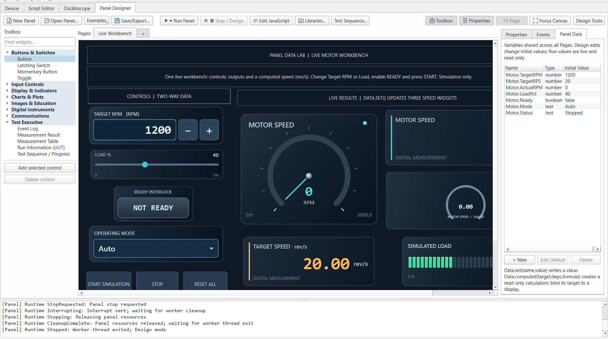

Chapter 5 — Shared Panel Data and computed values

Panel Data is the common state model for a multi-widget Panel. It allows several Pages and controls to use the same typed values while keeping view-specific IDs separate from application state.
Declare values in Properties → Panel Data. Typical types are Number, Boolean and Text, with optional choice-type constraints. The designer saves their initial values. The runtime exposes live values while the Panel runs; stopping does not automatically rewrite initial values in the project.
Bind once, display many times
A motor dashboard might expose Motor.TargetRPM, Motor.ActualRPM, Motor.Ready, and Motor.Mode. A target control, large digital display and gauge can each reflect one or more of those values through Value Binding. Instead of separately pushing the same speed into three widgets, a script does:
Data.set('Motor.ActualRPM', 1725.0);
All widgets bound to that value refresh. The value is still a simulation unless it originates from an actual instrument or sensor.
Two ways to respond to change
Bind a widget's saved valueChanged event to a handler when you care about an operator action. Use Data.onChange(name, callback, {immediate:true}) when you care about a shared variable regardless of which widget or script changed it.
var watcher = Data.onChange('Motor.Ready', function(value) {
ui.set('readinessLabel', value ? 'READY' : 'NOT READY');
}, {immediate:true});
Keep these callbacks small and avoid writing back the same value endlessly. The native bridge guards against unbounded notification feedback, but clear ownership of data is better than relying on a guard.
Derived values belong in formulas
Data.computed(target,dependencies,formula) creates a run-time read-only derived value from existing declared variables. Dependencies are explicit, with values supplied to the function in the listed order.
Data.computed('Motor.TargetRPS', ['Motor.TargetRPM'], function(rpm) {
return rpm / 60;
});
A computed target must already be declared and should be bound to a read-only display. Its registration is evaluated at runtime; the formula lives in ordinary saved JavaScript. Use pure expressions—do not call Data.set() inside a computed formula. The source limits registration to 64 computed variables with 1–16 dependencies each.
Why direct widget assignment can fail
A widget with a Value Binding is controlled by shared data. Calling ui.set(widgetId, value) for that bound value is rejected rather than silently competing with the binding. Correct the underlying variable via Data.set(dataName, value) or change the binding in Design mode.